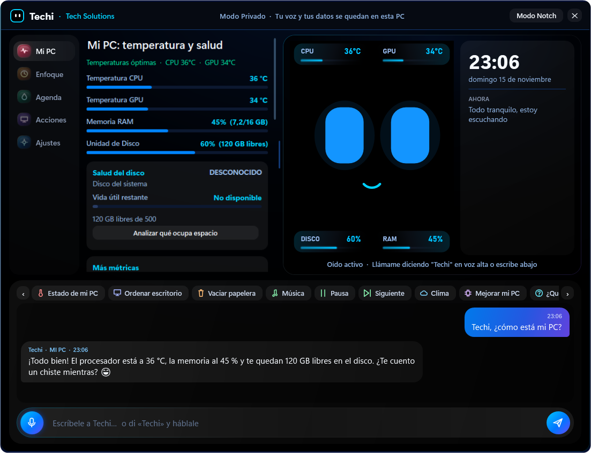
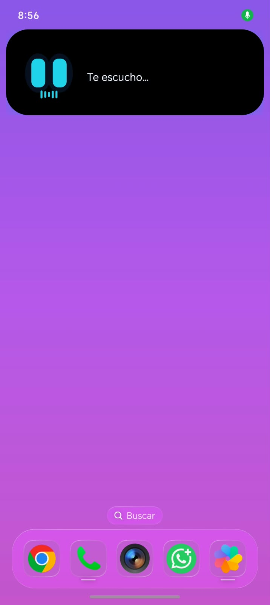
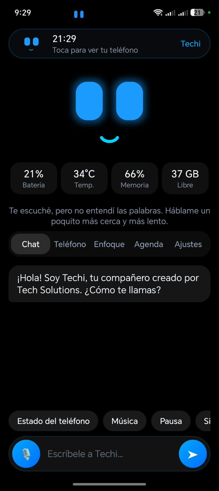

Techi te escucha, te habla con voz natural, cuida tu computador, te recuerda las cosas, te pone música y te saca una risa. Y lo mejor: tu voz se entiende dentro de tu equipo, nunca se sube a internet.
Techi acompaña cada conversación con 15 expresiones que reflejan su estado de ánimo. Basta con pedírselo —«muéstrame tu cara de feliz», «ponte de gato»— y responde con la expresión adecuada.
No hace falta aprenderse comandos: entiende muchas formas de decir lo mismo, y si el micrófono escucha mal, adivina lo que quisiste decir.
Techi es un compañero para el día a día: te ayuda con tu computador y tu teléfono, te organiza, te acompaña y te saca una sonrisa. Di «Techi» y luego lo que necesitas, con tus palabras. Estos son solo ejemplos.
Todas las voces son gratis, sintéticas y funcionan sin internet.
Techi habla con el motor de voz de tu propio teléfono, así que tienes las voces que traiga (muchas son de hombre y de mujer).
Así se ve Techi en el PC y en el celular. Elige uno de sus siete colores y sus ojos, la cápsula, los botones y el chat cambian contigo. En Ajustes › Personalización o con la voz: «Techi, ponte verde».

En tu computador


En tu teléfono
Sin rojo: ese color queda reservado para las alertas.
En el teléfono, Techi se esconde en una cápsula arriba de tu pantalla. La tocas, se despliega, te escucha y se vuelve a esconder. Desde cualquier app.
Gratis. Se actualiza solo: cada versión nueva viene firmada por TechSolutions.valpo y Techi revisa la firma antes de instalarla.
Techi es gratuito y lo desarrolla Maikel Perera en TechSolutions.valpo, Valparaíso. Tu aporte financia nuevas funciones, mejoras continuas y la construcción del robot Techi.
El pago lo procesa la plataforma que elijas. TechSolutions.valpo nunca ve los datos de tu tarjeta.
Versión 6.3.6 para Windows y 1.9.6 para Android. Techi se actualiza solo: no tienes que volver a descargarlo.
Techi ahora te entiende y te responde en español, inglés o portugués: la pantalla, su voz, las órdenes («abre WhatsApp», «open WhatsApp», «abra o WhatsApp») y la conversación. Se elige en Ajustes › Idioma.
En el teléfono hay una sola cara activa a la vez: la grande cuando abres Techi y la cápsula flotante solo cuando sales de la app. En el PC, su animación se pausa al minimizar. Gasta menos batería y responde al instante.
En Agenda toca «Sí, entrené hoy» o «Aún no», o díselo: «Techi, ya entrené hoy». Techi lleva tu racha de días seguidos y te anima a no cortarla.
Cuenta tus vasos de agua del día, te muestra cuánto te falta para tu meta y te recuerda tomar agua.
Toca «Llama a…» o «Mensaje a…» y di solo el nombre: Techi llama o te deja el WhatsApp listo. Y en «Pídele a Techi» tienes ideas como «Resumen del día», traducir o pantalla dividida.
Toca «Toca para ver tu teléfono»: batería y temperatura, memoria RAM libre y espacio disponible, con accesos a Wi-Fi, Bluetooth, linterna y limpieza.
Los ajustes vienen en tarjetas claras: Idioma, Voz y activación, Rendimiento y batería y Conexión IA. Lo técnico queda guardado en «Avanzado».
Si lo activas en Ajustes › Conexión IA, con internet Techi entiende tu voz y conversa con un motor en la nube, más preciso y rápido. Sin internet sigue funcionando igual con su motor dentro del equipo. Viene apagado: tú decides.
Si tu teléfono no le entrega sonido por un camino, Techi prueba otro solo y recuerda el que funciona. Si una llamada o una nota de voz toma el micrófono, Techi espera en silencio y vuelve a escuchar apenas se libera. Y en Ajustes, «Probar y reparar micrófono» lo revisa todo en 2 segundos.
Techi ahora tiene un servidor de IA en la nube mucho más rápido e inteligente, para conversar de forma natural y ayudarte con temas difíciles. Su base local se queda en tu equipo para cuidarlo: abrir apps, música, temperaturas, limpieza y recordatorios responden al instante, incluso sin internet. Lo activas en Ajustes › Conexión IA.
El servidor solo procesa lo que le dices a Techi después de llamarlo y lo que le preguntas a la IA. No escucha tu micrófono en segundo plano, no envía tus archivos, contactos, fotos ni datos de tu PC o teléfono, y no guarda tus conversaciones.
Conversaciones naturales, preguntas difíciles, ideas, traducciones y ayuda paso a paso, por voz o escribiendo. Techi entiende mejor lo que quieres decir, aunque lo digas a tu manera.
Sin internet, Techi sigue funcionando con su motor local. La IA del equipo solo se carga cuando la necesitas y se suelta a los 2 minutos sin uso, para no gastar memoria, temperatura ni batería.
No. Techi solo espera su nombre, «Techi», y eso ocurre dentro de tu equipo: tu voz se convierte en texto ahí mismo y el audio no se guarda ni se envía. No tiene cuentas, ni anuncios, ni rastreo, y TechSolutions.valpo no tiene servidores donde guardar tus conversaciones. Solo usa internet cuando le pides algo que lo necesita: el clima, Wikipedia, un mapa o buscar actualizaciones. Si quieres que no escuche nada, dile «Techi, descansa» y suelta el micrófono por completo.
No es ChatGPT ni Gemini. De fábrica no manda nada a la nube; solo si tú activas el motor inteligente en la nube (opcional), el audio y el texto de tus órdenes pasan por el servidor de TechSolutions.valpo y el servicio de IA Groq para entenderte, sin guardarse. Techi es un programa de TechSolutions.valpo: sus conversaciones y órdenes están programadas a mano, y entiende lo que dices por su significado con un modelo liviano que viene dentro de la app. Para escuchar y hablar usa piezas de código abierto y gratuitas que funcionan en tu equipo, sin internet (los créditos y licencias vienen con la app). No se entrenó con tus datos: solo aprende lo que tú le confirmas, y eso queda en tu equipo. Además, en el PC y en Android Techi trae su propia IA (Qwen3 y Qwen2.5 de Alibaba Cloud, gratuitas y de licencia Apache 2.0, con el motor llama.cpp): se descarga sola la primera vez (en el teléfono, con Wi-Fi), elige un modelo compacto que tu equipo aguanta sin calentarse (hasta Qwen3 1.7B en el PC y en un teléfono de 8 GB), se carga solo cuando hace falta y funciona sin internet. Recuerda lo último que conversaron, así entiende «¿y la de Italia?» o «no, mejor en YouTube». Cuando una frase no es clara, la IA la interpreta.
Sí. Techi funciona aparte y no choca con otros asistentes. Si quieres usar Gemini o ChatGPT, dile «Techi, abre Gemini» y te lo abre.
En español, inglés y portugués: la pantalla, su voz, las órdenes y la conversación. Se cambia en Ajustes › Idioma (en Android es la primera tarjeta). Esta página también está en los tres idiomas: usa los botones ES · EN · PT de arriba.
Antes de pedir nada, Techi te explica cada permiso. Al comienzo pide solo dos: micrófono (para escucharte) y notificaciones (para tus recordatorios). Después, «mostrar sobre otras apps» para que la cápsula aparezca arriba. Contactos, llamadas y calendario los pide recién cuando le pides llamar a alguien o anotar algo. No pide ubicación, cámara, SMS ni acceso a tus fotos, y puedes quitar cualquier permiso en Ajustes › Apps › Techi.
En el PC: Ajustes › Voz y activación, elige una de las 15 voces (8 de hombre y 7 de mujer) o dile «Techi, pon voz de hombre». En Android: Ajustes › Voz de Techi, elige otra voz del teléfono o el tono «Grave (hombre)», o dile «Techi, pon voz de hombre».
Sí. Reacciona cuando dices su nombre al comienzo («Techi, ¿cómo estás?») o al final de una frase corta («¿cómo estás, Techi?»). En Android, mientras suena un video o música en el teléfono no escucha su nombre, para no despertarse con lo que dicen en YouTube, TikTok o Instagram; ahí basta con tocar la cápsula. Puedes decir la orden de corrido, sin esperar: «Techi, pon música».
Hoy es gratis, con una cuota diaria de consultas al servidor inteligente. Próximamente habrá una versión Pro / Plus para quienes necesiten uso ilimitado. Si te gusta, puedes invitarle un café para apoyar el proyecto.
Techi usa unos 55 MB y casi nada de procesador cuando está tranquilo. Su voz (unos 240 MB) y su oído (300 a 500 MB) se cargan cuando conversas y se liberan solos tras unos minutos sin hablar o cuando juegas. Puedes preguntarle «¿cuánto consumes?».
Solo. En PC descarga la versión nueva en segundo plano y se instala la próxima vez que lo abres. En Android la descarga y te pide tocar «Instalar» (Android siempre lo pide). Cada actualización va firmada: si alguien la altera, Techi no la instala.
Primero actualiza a la versión 6.3.4 o más nueva: arregla el caso más común, cuando tu usuario o tu carpeta tienen tildes o «ñ» (por ejemplo «José» o «Begoña»). Luego abre Techi › Ajustes › Voz y activación › «Revisar y reparar mi oído» (o escríbele «¿por qué no me escuchas?») y Techi se revisa y se arregla solo. Otras causas: 1) abriste Techi desde dentro del ZIP: haz clic derecho en el ZIP › «Extraer todo» y abre Techi.exe desde la carpeta extraída; 2) falta, o es antiguo, un componente gratuito de Microsoft (Visual C++): Techi te ofrece instalarlo con un botón; 3) Windows bloquea el micrófono: Configuración › Privacidad y seguridad › Micrófono, activa el acceso y «aplicaciones de escritorio». Y recuerda decir «Techi» antes de pedirle algo.
Sí. En Ajustes › Personalización elige su color: azul, celeste, verde, amarillo, naranja, morado o rosado. Cambian sus ojos, su boca, la cápsula y los detalles de la app, con el tema oscuro o el claro. También puedes decirle «Techi, ponte verde». El rojo no se ofrece porque es el color de las alertas.
Techi gasta poco: hay una sola cara activa a la vez, solo escucha con atención cuando hay voz cerca, su carita casi no se redibuja cuando está quieta y su IA se apaga sola a los 3 minutos sin uso. Si deja de escucharte, casi siempre es el ahorro de batería de la marca (Xiaomi, Redmi, Huawei, Honor, Samsung, Oppo, Realme, Vivo, Nokia…): en Ajustes de Techi toca «Que tu teléfono no duerma a Techi» y te lleva a la pantalla correcta de tu teléfono.
Sí, si lo activas: Techi › Ajustes › «Escucharme con la pantalla bloqueada». Te responde sobre la pantalla de bloqueo, y si le pides abrir una app te pide desbloquear. Viene apagado porque usa un poco más de batería.
Sí. «Pon música» abre Spotify si lo tienes (si no, la app de música que tengas: YouTube Music, Deezer o la del teléfono) y le da play. Para otra app, nómbrala: «pon reggaetón en YouTube Music». Si siempre usas otra, dile «mi app de música es YouTube Music». Y mientras juegas: «abre una ventana de WhatsApp», «abre Spotify en ventana flotante» o «abre Discord en pantalla dividida».
Sí. En el PC hay un «Oído preciso» opcional (Ajustes › Voz y activación): entiende mejor con ruido y nombres difíciles, pero tarda un par de segundos más, así que se recomienda para PCs potentes. Es gratis (574 MB, una sola vez) y funciona sin internet. En Android, Techi usa el reconocimiento sin internet de tu teléfono y, si falta el español, le pide al teléfono descargarlo.
Si dice «el paquete no es válido» o «no se pudo analizar el paquete», el archivo se descargó dañado (pasa sobre todo al descargar desde el navegador de TikTok, Instagram o Facebook, o si la descarga se cortó). Bórralo, abre esta página en Chrome y descárgalo de nuevo esperando que termine. Si aún no se instala, prueba esto: 1) descarga Techi de nuevo desde esta página (la versión 1.9.1 o más nueva ya no pide permisos especiales); 2) si tenías un Techi antiguo, desinstálalo primero (también en «Segundo espacio» o «Apps duplicadas»); 3) si Play Protect muestra un aviso de app desconocida, toca «Más detalles» › «Instalar de todas formas». Nunca hace falta apagar Play Protect. 4) En Huawei, desactiva el «Modo puro». Si aún no se instala, escríbenos por WhatsApp.
Maikel Perera, de TechSolutions.valpo, en Valparaíso, Chile. Soporte por WhatsApp +56 9 2231 0609 o Instagram @techsolutions.valpo.